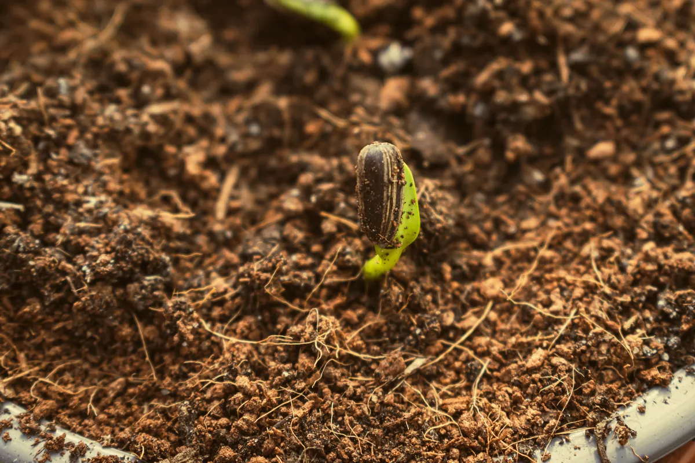

Des graines qui lèvent, avec le mode d'emploi.
Au marché, les graines se vendent souvent au poids, sans nom de variété ni date. On les sème, on attend, et parfois rien ne lève. Pépix part de là.
On vend quatre espèces, pas plus : oignon, tomate, chou, piment. Chaque lot est mis à germer avant d'être ensaché, et le sachet renvoie vers une fiche de culture.

Ce qui change
| Au marché | Avec Pépix | |
|---|---|---|
| Variété | Souvent sans nom | Nommée sur l'étiquette |
| Quantité | Au poids | Sachet de 5 g |
| Levée | On sème, on attend, parfois rien ne lève | Chaque lot testé en germination |
| Mode d'emploi | À deviner | Fiche de culture par QR code |

Dans un sachet
- 5 g de graines d'une seule variété, nommée sur l'étiquette.
- Un lot testé en germination avant l'ensachage.
- Un QR code qui ouvre la fiche : semis, repiquage, arrosage, récolte.
Qui porte le projet
Yannick Felix Viera MOREIRA
Étudiant à l'ISM
Pépix est son projet d'école : une marque de semences maraîchères pensée pour les producteurs du Sénégal.
Où nous en sommes
-
Phase 1, terminée
Sélection partenaire
Des semences de fournisseurs vérifiés, expédiées directement, avec nos fiches de conseil.
-
Phase 2, en cours
Gamme Pépix
Nos propres sachets refermables, lots contrôlés, guide de culture par QR code.
Nous trouver
- Adresse
- Dakar, Sénégal
- +221 77 178 69 15
- Livraison
- 24 à 48 h à Dakar, 3 à 5 jours en région